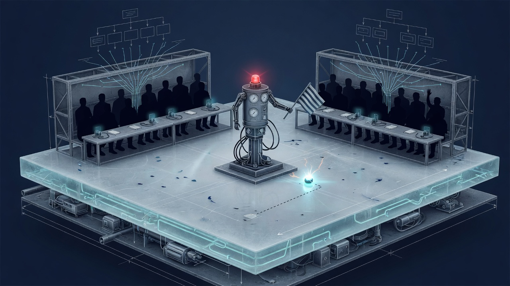
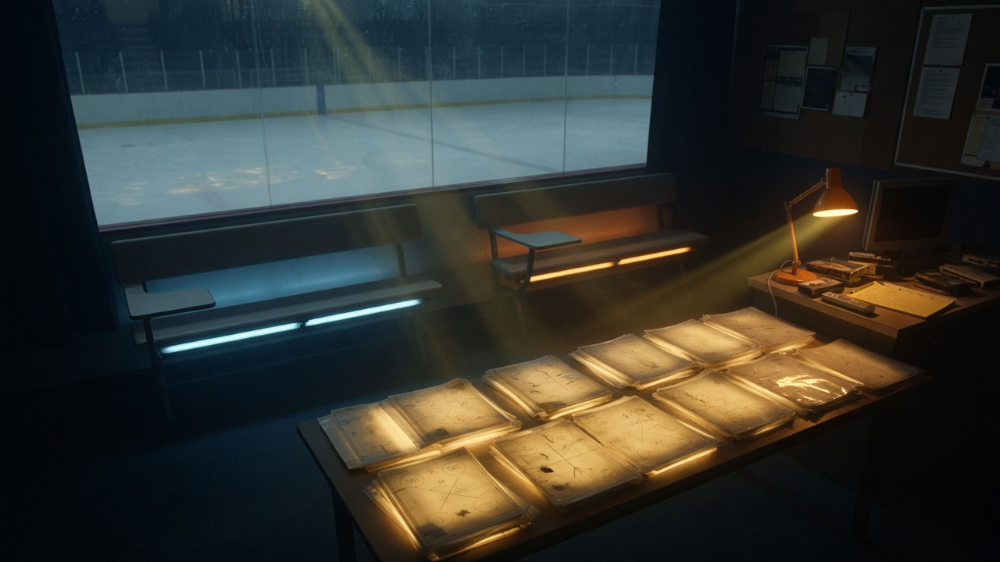
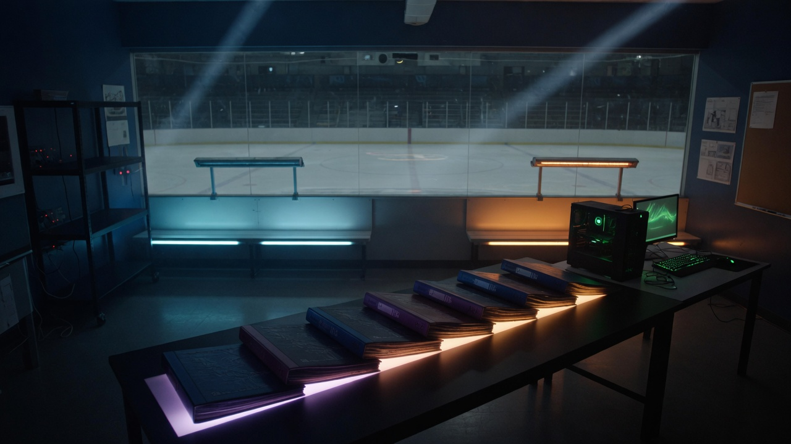
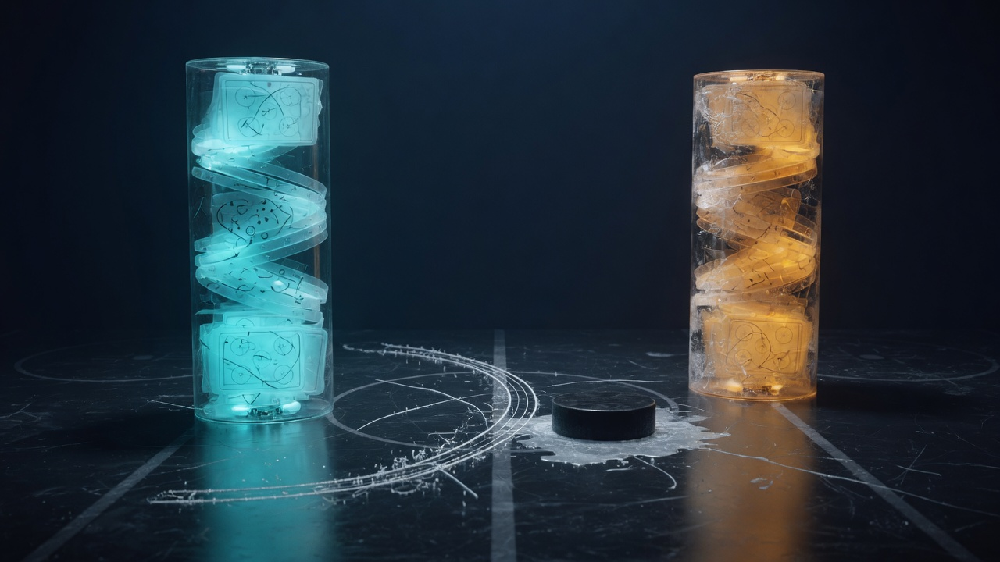
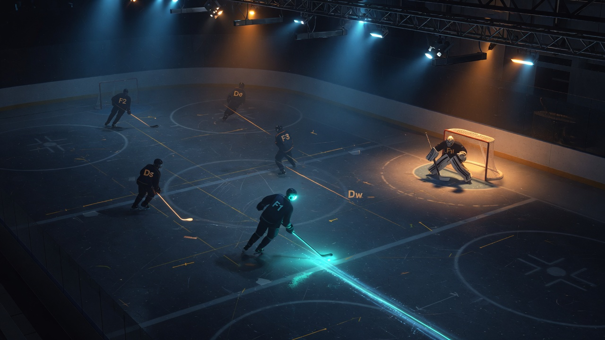
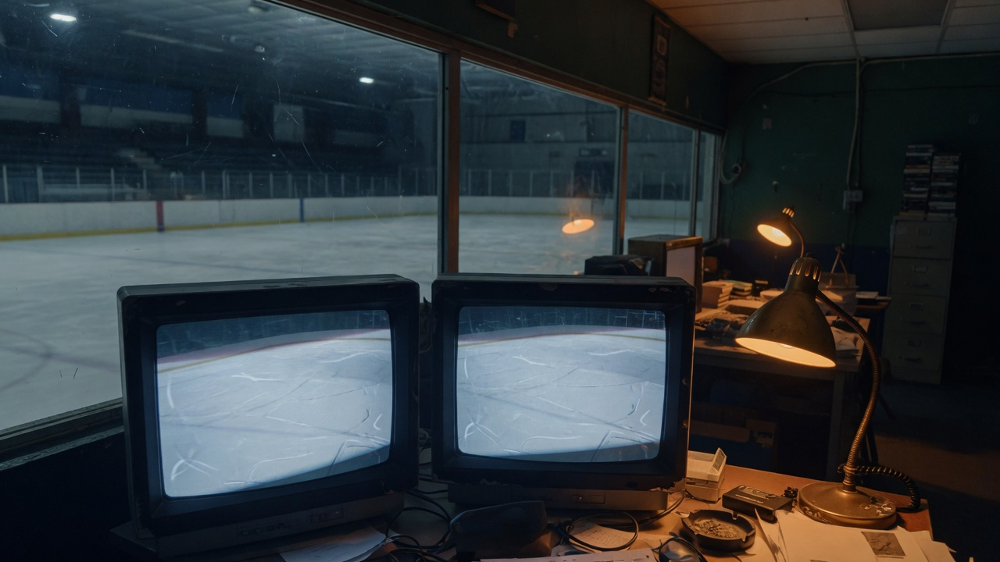

1 What this project is (in one breath)
Graph_Hockey is a localhost Node.js hockey game where two independently compiled LangGraph.js teams compete on a deterministic 2D rink. The Match Orchestrator ticks physics at 10 Hz. Coaches only speak at decision epochs. After every win, loss, or tie, After-Action Review cites real eventIds and patches a structured playbook.
Live default AAR is --aar-mode code: a cited codeDraft in milliseconds. That is not --no-llm. Live epochs still call the coach. --no-llm never mutates — it is the control arm. The browser is a spectator. After npm run web, open http://127.0.0.1:8787/.
Engine is the referee
advanceWorld is the only mutator of puck and bodies.
Graphs are staff
Live staff is Head Coach. Specialists are compiled, opt-in. Skaters are src/ice/.
Learning is data
Plays are JSON. AAR emits capped, cited patches. Retrieve ranks them next game.
Proof is a diff
retrieveTop vs a --no-llm twin. A version bump with the same top-1 is not learning. Quality is a second question.
What we actually have (read this twice)
shotPolicy — not because five skaters vote.home / away compiles
Two StateGraphs. Separate checkpointers, separate books. Never see opponent playId.
Head Coach only
Macro: ingest → situation → retrieve → HC → assemble. Home grok-4.5. Away Glimmer local.
OC DC ST goalie scout
In the tree. Off unless specialists: true. Fan-out froze live-51 on default-structure.
Captain
Offside / icing still Send captain. Those still time out.
F1 F2 F3 Ds Dw G
Every 10 Hz tick. Ice F1 shoot beats overlay pass/dump. shotLock = one shot per possession.
--aar-mode code
Cited codeDraft, applies, no 45s graph. auto restores the LLM compile. --no-llm persist-only.
2 The map of the code
Think basement → ice → benches → film room, not a dump of paths. LangGraph is the skill; the folders force the lesson: graphs propose, code disposes.
src/engine/
200×85 ft, 10 Hz Euler. Honest chances: Shot then Goal; dump/pass freeze even if G clips.
src/ice/
F1/F2/F3/Ds/Dw/G every tick. Shoot / pass / clear. Code, not a graph.
src/agents/
Two compiles. Live macro: Head Coach → assemble. Specialists opt-in.
src/orchestrator/
Tick, mirrored observe, invoke. Never an LLM.
playbook/ + persist/
Seed books, sql.js events, replay resimulation.
src/aar/
Default: codeDraft + cite. LLM graph is --aar-mode auto.
film/ + web/
Clips, ledger, Canvas 2D. No keys on the wire.
Cheat sheet: AGENTS.md. Long spec: docs/DESIGN.md. CLI twin: src/cli/ (gh simulate --no-llm).
3 Architecture
src/engine/rules.ts. A hallucinated goal is JSON the validator ignores.
Green ticks never stop. Gold packets are epochs (sparse). Cyan is after the horn — the only path that may rewrite long-term memory.
Team compile path: START → ingest → situation → retrieve_plays → (macro) head_coach → assemble → validate → END. Live macro does not Send[] specialists. Micro still hits Captain only. Empty-net families stay off the 5v5 retrieve menu. There is no route_specialists node.
4 Technologies we chose (and why)
| Choice | Why | Tradeoff |
|---|---|---|
| TypeScript strict, Node ≥ 20 | Types from rink to WS | noEmit + TS extensions for vitest |
| npm lockfile | pnpm/corepack EPERM on this Windows host | Design preferred pnpm; we documented it |
LangGraph.js StateSchema | Current Graph API | Pin versions; no Annotation.Root |
xAI ChatXAI Completions | XAI_API_KEY, api.x.ai | modelKwargs.reasoning_effort |
grok-4.5 / grok-4.3 | Hybrid epochs, not per-tick LLM | 4.5 reasoning cannot be off; in-game low |
| Muse Glimmer 30B local | Away bench at $0. llama.cpp 127.0.0.1:8080 | Skip native structured; JSON often in reasoning_content; cap 120 tokens |
| sql.js WASM | No VS Build Tools / native CI addons | Adapter in src/persist/db.ts |
Node http + ws | Localhost only | Origin-locked loopback |
| Canvas 2D | No second clock (Phaser) | Plot circles on ice |
@napi-rs/canvas + ffmpeg | Boss-inbox MP4 | Derivative; Film Room stays canonical |
We did not pick Unity, OpenAI-as-provider, or RL. Those hide LangGraph or bankrupt the token budget. Hosted Muse Spark burned tokens for thinking we never used. Local Glimmer is the away bench. Never muse-spark-*-contributor.
5 How the parts talk to each other
There are three clocks, not one “the agents think.” Mixing them is how you get a timeout and no hockey.
Physics + ice roles. Zero LLM. F1 may shoot. shotLock = one chance per possession.
Faceoff, ST, 8s possession. One Head Coach call (6s / 12s abort). Most ticks skip this.
Live default --aar-mode code: milliseconds, cited apply. auto is the 45s graph. --no-llm never mutates.
The gold dot is the only LLM on a live macro. Retrieve is code. Ice still shoots if the coach is late.
playStillValid skip. Valid play ⇒ that side pays zero tokens.puck.x ≈ 0. No opponent playId.--no-llm). Timeout on default-structure seeds the book 5v5 play.themFamily counter bonus. Empty-net families (pull-early, en-scramble) stay off unless strength is EN.--aar-mode code applies a cited patch without the 45s graph. Boosts need match xG. --no-llm still does not mutate.gh footage --mp4 is a derivative. Clip windows carry period because liveTick resets.How the team learns together
They do not learn by stuffing the whole game into a prompt. They learn because memory is a versioned playbook that both the next retrieve and the next skate can see.

Winner: cited boost + real xG on play.stats. Loser: add_counter of their family. Next retrieve can rank a different 5v5. Proof is two diffs: did retrieveTop move vs the control, and did the hockey get better?
6 The road tonight — LangGraph learning, measured
Tonight was the first night the learning machine was honest enough to measure. We did not invent a new architecture. We stopped lying to the scorecard, stopped paying Spark for thinking tokens, and ran a control.

Gold packet is the night. Red start is the failed learner. Green is a fix. Amber is a measurement that was not yet a win.
ser-learn-7
Home 8 goals, 0 shots. Books v1→v8, retrieveTop 0/6. Overlay pass gagged ice F1. Carry-in Goal without Shot.
A–D on main
Honest chances. Ice F1 shoot beats overlay pass. --aar-mode code applies. Boost only if match xG > 0. Goldens did not move.
Spark → Glimmer
Away is local muse-glimmer-30b on llama.cpp :8080. $0. Never muse-spark-*-contributor.
ser-glimmer-3
Away locked pull-early-template at 5v5. g1: 106 shots / 108 offsides. 20s periods make “last 3 minutes” always true.
EN gate + Glimmer JSON
Empty-net families excluded unless strength is EN. Skip native structured. Read reasoning_content. Cap 120 tokens.
ser-glimmer-fresh
3×20s, 5v5 openings, offsides 1–1. retrieveTop home 2/2, away 1/2. Menu can move without pulling the goalie.
The 7-game card (ser-emp-7)
Home xAI, away Glimmer, --aar-mode code, 7×20s, seed 7, fresh db. Control: same seed, --no-llm.
| G | Score | Home retrieve | Away retrieve | Home ch/off | Away ch/off |
|---|---|---|---|---|---|
| 0 | 3–2 home | 5v5-122-forecheck | oz-crash-net | 8 / 1 | 3 / 1 |
| 1 | 1–2 away | 5v5-122-forecheck | oz-crash-net | 6 / 1 | 2 / 0 |
| 2 | 1–3 away | 5v5-122-forecheck | 5v5-212-forecheck | 4 / 2 | 3 / 1 |
| 3 | 2–4 away | 5v5-122-forecheck | 5v5-212-forecheck | 7 / 0 | 5 / 0 |
| 4 | 1–5 away | protect-lead-1-1-3 | 5v5-212-forecheck | 9 / 1 | 9 / 0 |
| 5 | 2–3 away | protect-lead-1-1-3 | 5v5-212-forecheck | 6 / 1 | 6 / 1 |
| 6 | 2–2 tie | protect-lead-1-1-3 | 5v5-212-forecheck | 6 / 1 | 3 / 2 |
Control books stay v1, openings frozen on 5v5-122 vs 5v5-212. Control g6 away: 15 offsides, 0 shots — ice noise, not a staff.

Works
Live AAR applies. retrieveTop moved 1/6 both sides. The --no-llm twin stayed 0/6 at v1. Offsides on the live series stayed 0–2, not 166.
Not proven
Home locked protect-lead-1-1-3 from g4 while losing. Δ xG −0.55. Pairs 0. Another 7-gamer will teach that wrong lesson faster.
Evaluate 1 after the gate (ser-emp-8)
Same protocol, gate on main (ff23dd5). Control stayed v1 / 0/6. Live books v8. Home retrieveTop stayed 5v5-122-forecheck. Zero lead-protect skating. Δ xG +0.176, pairs 0.
Held
Trailing/tied 1-1-3 is gone from retrieve and from the event scan. The old home 1/6 retrieveTop was that bug.
Not credited
Offsides left 0–2. Faceoff left Ds in OZ; 1–2 tick delayed-offside loop. Diagnose before dump-in. Full log: better-hockey.md.
Evaluate 2 after the ice clamp (ser-emp-9)
c1e7707: NZ faceoff onside clamp, Ds tag-up, no delayed release. Same 7×20s protocol. Offsides all 0–2. Δ xG −0.376 beats −0.552. Pairs 3. Bank 1/5.
Dump-in (PR-4)
NZ ice clear beats overlay dump. The puck leaves the stick as clear, not a Shot. --no-llm goldens moved on purpose: pr8 count 522→301, Shot 1, Offside 0, epochs 11. pr4 unchanged.
Evaluate 3 after dump-in (ser-emp-10)
Ice gates held (offsides 0–2, no lead-protect skating, books v8). Home Δ xG −0.711, pairs 1. Not credited. g0/g3 xG was pp1-umbrella (share 63–98%).
Evaluate 4 after AAR 5v5 (ser-emp-11)
Wins/losses wrote 122/breakout, not umbrella. g6 xG rose 0.46→0.79. Footage Δ −0.376 (raw −0.3762) is not strictly better. Pairs 1. Bank stays 1/5. Flat 2/3.
7 Bugs, scars, and how we fixed them
Not hypothetical. These would have shipped a wrong hockey game.
Scar 1 — The graph that never called Head Coach
Scar 2 — Possession without a face
Scar 3 — Occupancy scored a kick
Scar 4 — Empty net confused power play
Scar 5 — Node named situation
Scar 6 — Pairing too strict to show improvement
Scar 7 — Graphs that never shot
Scar 8 — AAR timeout learned nothing
Scar 9 — Head Coach froze on default-structure
Scar 10 — 211 ok epochs, still a machine-gun
Scar 11 — Goals that were not chances
Scar 12 — The 45s AAR we did not need
Scar 13 — Boosting a play that never shot
Scar 14 — Spark burned the night; Glimmer hid the JSON
Scar 15 — Empty-net at even strength, and protect-lead while trailing

8 Pitfalls to avoid next time
Send[] from a random node. Conditional edge or Command.goto, list ends, empty list still assembles.MessagesValue on a match-long thread. Per-epoch thread_id or period 3 is the whole game.Send[] specialists on a 12s live epoch. Head Coach first, or abort freezes default-structure.--aar-mode code as --no-llm. Code applies. --no-llm is the control that must not write books.--no-llm twin.protect-lead win retrieve while trailing. Gated on main.ser-emp-8 +0.176 with 77/63 offsides is not better hockey.0.0.0.0 “for a demo.” Loopback is the product.--no-llm as optional. It is how CI proves the engine without credits.9 What good engineers did here
side on one graph. Hiding is structural.setCreateChatModel / FakeListChatModel.--no-llm, books must stay v1. Without that, “retrieveTop moved” is a story.10 Lessons you can steal
puck.x ≈ 0 is a one-liner that caught leaks.
gh footage --mp4 is a derivative for a human inbox.11 Where to go next
- F2 contest of dump-ins, then Evaluate 5. Evaluate 4 did not credit (Δ xG −0.376, pairs 1). Need pairs ≥ 3 and g6 xG > 0.792. Log: better-hockey.md (bank 1/5, flat 2/3).
- Captain stays off. Do not enable it to fix offsides.
- HITL later — LangGraph
interrupt(), off the 12s clock. - Glimmer is on
:8080. Do not restart 8787 unless asked. Do not raise timeouts.--aar-mode codeis not--no-llm.
cite_check = drop uncited ops. --aar-mode code = cited apply, no AAR graph (live default, not --no-llm). Glimmer = local Muse 30B on :8080. retrieveTop = #1 play retrieve would hand the coach.